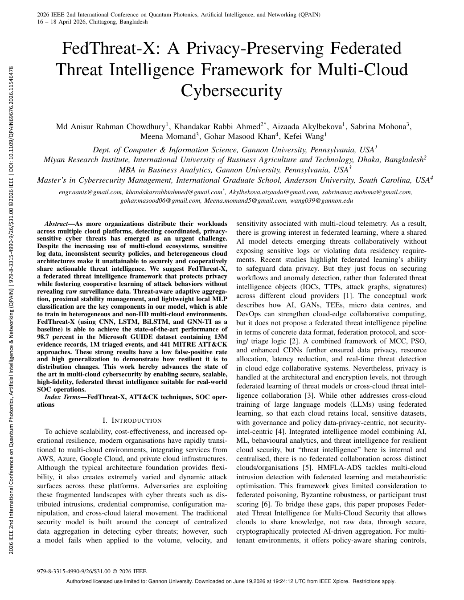
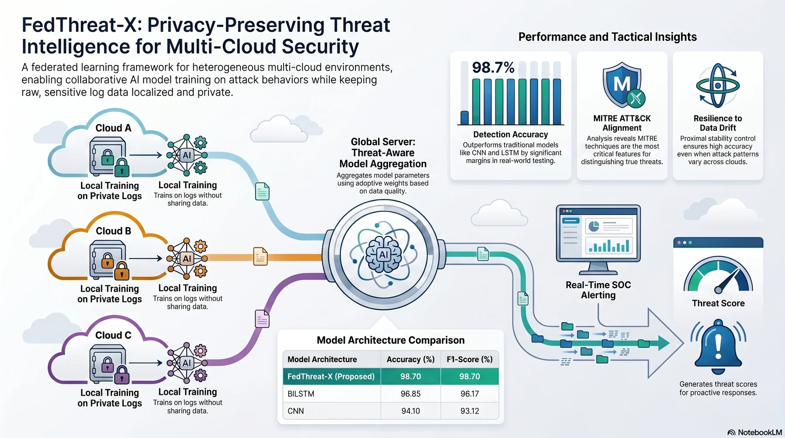
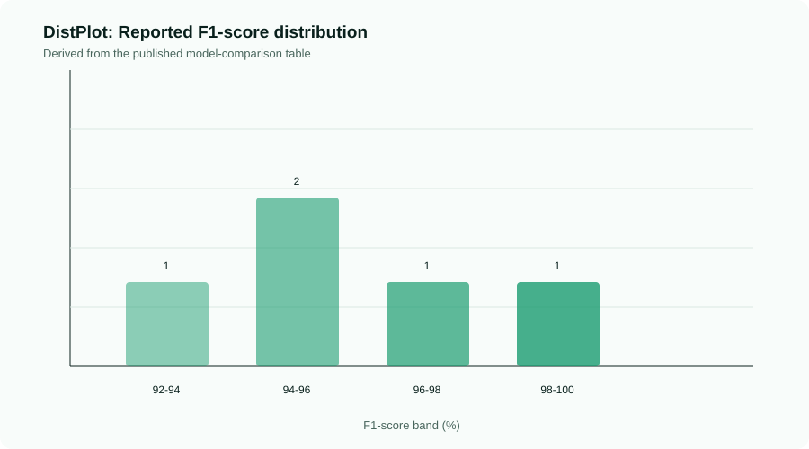
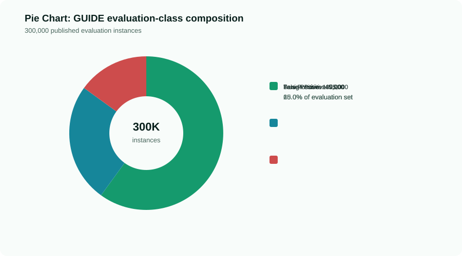
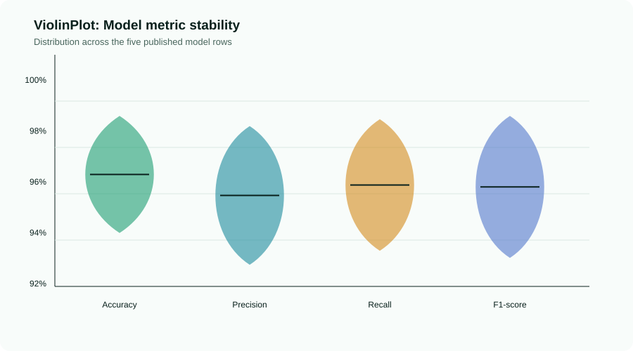
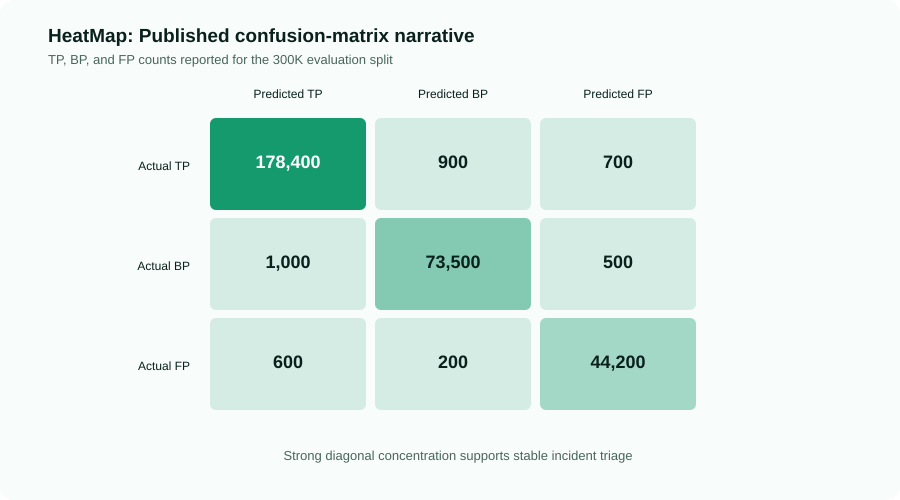
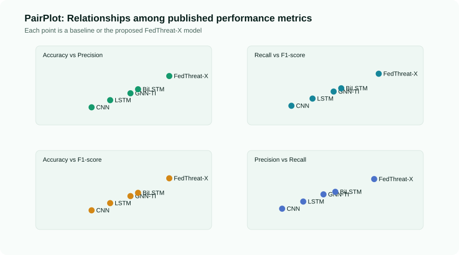
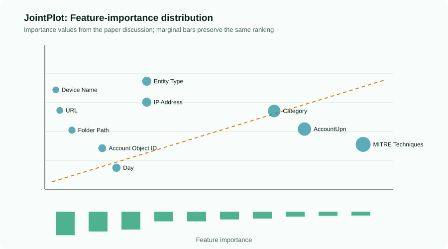

IEEE QPAIN 2026 Published Research
FedThreat-X
A privacy-preserving federated threat intelligence framework for multi-cloud cybersecurity, designed for heterogeneous cloud telemetry, non-IID threat drift, and SOC-ready detection without exchanging raw logs.
98.70%Accuracy
98.30%Precision
98.57%Recall
50Federated rounds
System Architecture
Multi-cloud collaboration without raw telemetry leakage.
The supplied infographic is embedded as the visual center of the portal and connects the research method to a practical cloud/SOC workflow.
Threat-Aware Federated Learning
Each cloud node trains locally on normalized security telemetry. The global model is updated with adaptive weights based on validation behavior, data quality, and threat drift.
Proximal Stability Control
A proximal term limits harmful client divergence in non-IID environments, improving robustness across AWS, Azure, Google Cloud, private cloud, and SOC telemetry streams.

Interactive Analytics
Research visualizations built into the website.
The portal includes DistPlot, Pie Chart, ViolinPlot, HeatMap, PairPlot, and JointPlot views for model performance, class balance, stability, confusion matrix behavior, and feature impact. Static charts below are derived from the published aggregate evidence, not unreleased raw telemetry.
Research Asset Gallery
Portable visual evidence for GitHub, reports, and citations.
These repository-native SVG charts are generated from the documented metric evidence, so they render without a JavaScript dependency.






Research Paper Review
Understand FedThreat-X from problem framing to SOC deployment.
This reading layer translates the published paper into an operational narrative for researchers, cloud-security architects, and SOC teams.
The research problem
Centralized threat intelligence requires sensitive logs to leave their cloud boundary. In multi-cloud environments, that creates data-residency, confidentiality, and scale constraints precisely when coordinated attack patterns need cross-provider visibility.
The technical answer
FedThreat-X keeps training local to each cloud node, exchanges model updates rather than raw telemetry, and uses threat-aware weighting plus proximal regularization to manage client quality, drift, and non-IID behavior.
What was evaluated
The study uses the Microsoft GUIDE security-incident dataset with 13M evidence records, 1M triaged events, and 441 MITRE ATT&CK techniques, comparing CNN, LSTM, GNN-TI, and BiLSTM baselines.
What the result means
FedThreat-X reports 98.70% accuracy and F1-score, with 98.30% precision and 98.57% recall. The value is not only the aggregate score: the framework is designed to preserve privacy while producing a deployable SOC threat score.
Why adaptive aggregation matters
Uniform averaging treats every cloud client equally. The proposed weighting favors reliable updates while accounting for drift, limiting the influence of lower-quality or inconsistent client behavior.
Why proximal stability matters
Cloud telemetry rarely follows a single distribution. The proximal term constrains local model divergence and helps the federated process remain stable under heterogeneous incident patterns.
Why SOC teams should care
The final global model converts incoming logs into threat-class probabilities and routes high-confidence incidents into an incident-response workflow without requiring a centralized raw-log lake.
Document Security Policy
Controlled access to the research document.
The research paper is distributed through a documented access workflow. Review the official IEEE record first, acknowledge the publication-use policy, then request the protected paper package from the author for academic or professional use.
Research Video
Watch the FedThreat-X technical walkthrough.
Use the chapter controls to move between the research motivation, federated architecture, model strategy, evaluation, and deployment implications.
Video briefing
The presentation connects the paper's privacy premise to a practical multi-cloud security workflow: local learning, adaptive coordination, and real-time SOC scoring.
Now Exploring
Research motivation
Why raw-log centralization becomes difficult in privacy-sensitive multi-cloud incident response.
ProblemArchitectureLearningResultsSOC
SOC Pipeline
From cloud log to response decision.
The deployment flow follows the paper: feature extraction, local inference, calibrated threat scoring, and SOC alert generation.
01
Telemetry
Cloud logs, identities, entities, detectors, URLs, and MITRE ATT&CK signals.
02
Local Training
Lightweight 3-layer MLP learns locally on each cloud node.
03
Aggregation
Threat-aware weighting prioritizes reliable client updates.
04
Scoring
Softmax confidence produces real-time triage probabilities.
05
SOC Action
Incidents are routed as true positive, benign positive, or false positive.
Researcher Profile
Md Anisur Rahman Chowdhury
Lead author and researcher for FedThreat-X, published at the 2026 IEEE 2nd International Conference on Quantum Photonics, Artificial Intelligence & Networking (QPAIN), Chittagong, Bangladesh, April 16-18, 2026.